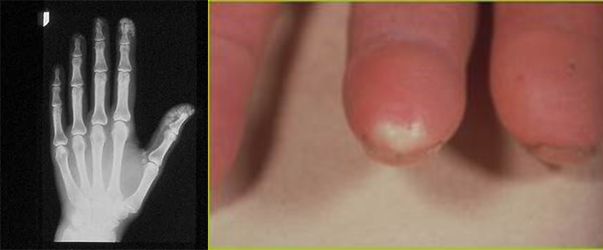

Module: In-depth information on muscle and lung disease with a focus on African Americans
Virginia Steen, MD
Over all, scleroderma in African Americans:
- Occurs more frequently and at a younger age.
- Is associated with diffuse scleroderma.
- Is associated with more severe small bowel involvement, and more severe pulmonary involvement.
- Pulmonary arterial hypertension occurs earlier, in younger patients with diffuse scleroderma.
- Because of all of these, the prognosis in African Americans with scleroderma is worse.
While these differences may be from socioeconomic disparities or because of access to care, we know that it is mainly because the disease is different in African Americans.
Genetic differences may also play a major role. There is an important study carefully looking at genetics in African Americans.
- GRASP (Genome Research in African-American Scleroderma Patients) is carefully looking at genetic factors that may be making the disease different in African Americans than in Caucasians.
- See clinical trials ( https://clinicaltrials.gov/) to find additional studies that you may qualify for.
It is particularly important for all African Americans to be very proactive in the diagnosis and management of their disease, know which organs are involved, and make sure all aspects of the disease are treated to improve their overall outcome.
This is the end of the module.
please proceed to the next module.